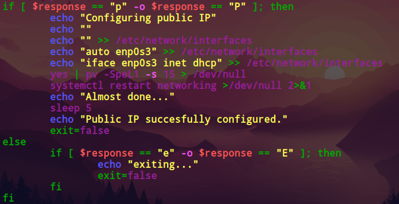

Merras
CyberSecurity Student
Merras
CyberSecurity Student
On this little project i will show you how to create a simple script in bash to configure the network configuration in linux, beacuse its easier and faster when you have the script than doing it manually.
First of all i wanna do a quick explanation about this script, so with this script we can add a new static/private network, add a new dynamic/public network and if we already have one of those two the script will recognize them on the configuration and it will ask if you want to do a new reconfiguration.
Quick View of the Script:
Configuring a Static Network with no existing configuration:
Configuring a Public Network with an already existing configuration:
To begin with the script we will create a Function to check if there is already an existing network configuration,
This function is in charge of checking if there is an actual configuration done in the network, if so the script will ask the user if we want to remove the configuration
if the user accepts the script will automatically remove the network configuration with the "sed" command, This removes any line in "/etc/network/interfaces" that contains (enp0s3, enp0s8, address),
the " \| " is the regex "OR" operator and " d " means "delete matching line".
If the user refuses to remove any existing configuration the script will end.
Now once the user has decided to delete the existing configuration, the script will ask the user to configure a public or private network, the first part of the script is configuring a static(private) network as we can see in the image shown the script is asking the user the IP and Mask and the script will automatically configure the "/etc/network/interfaces" file.
For the second part of the script, if the user selected to configure a public network the script will automatically configure by itself as shown in the picture below:
If the user selected an invalid choice the script will continue to ask to configure until the user decides to exit the script:
This was all! i hope you liked my script!, you can get the full code here: Code here